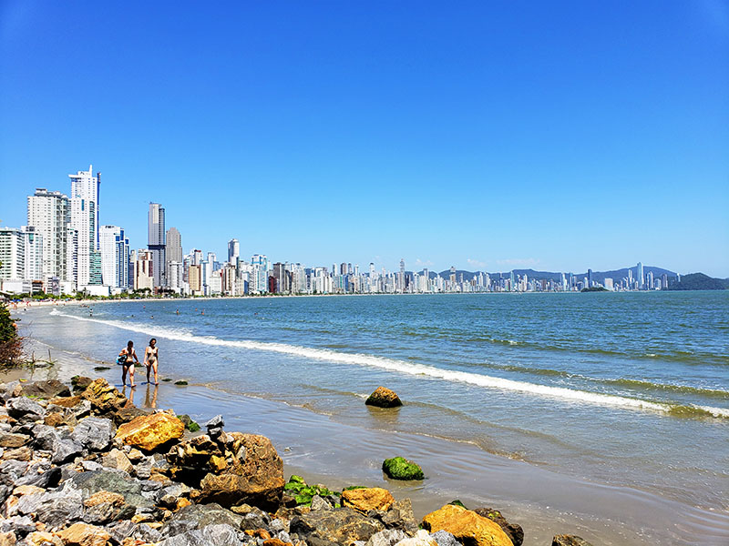
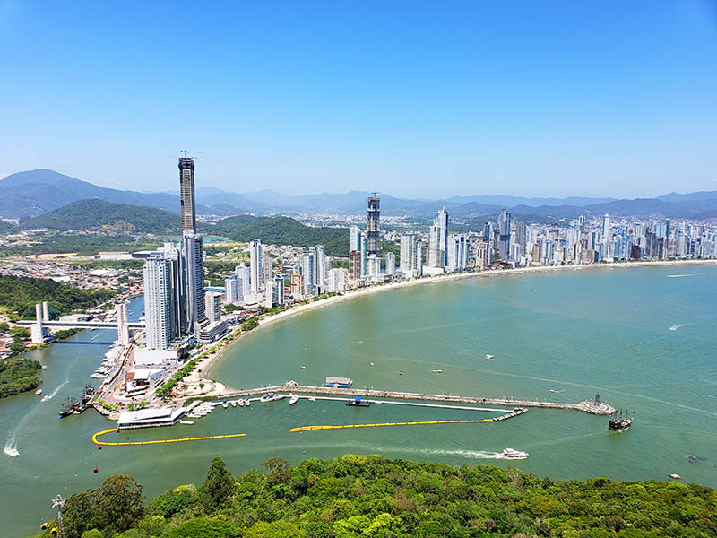
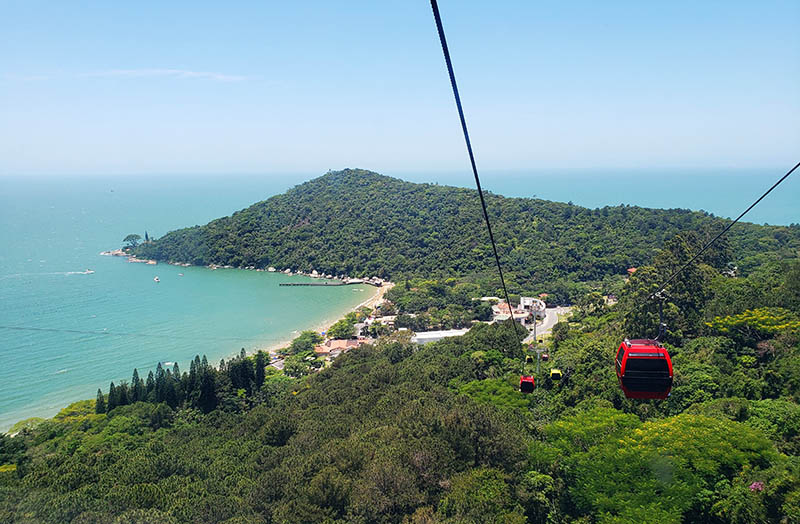
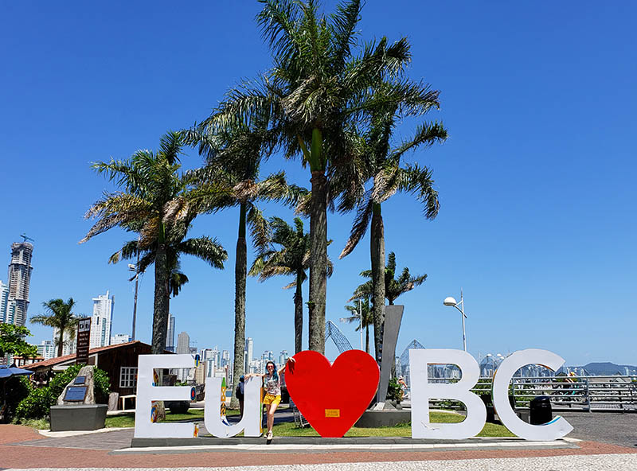
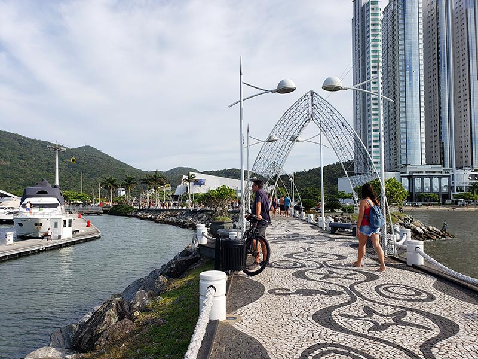
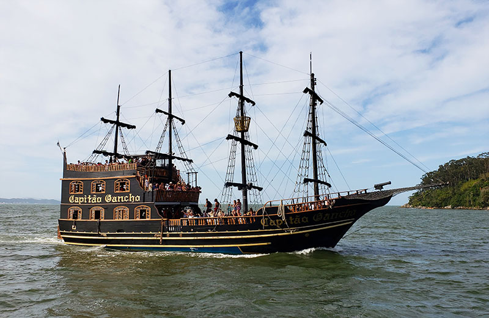
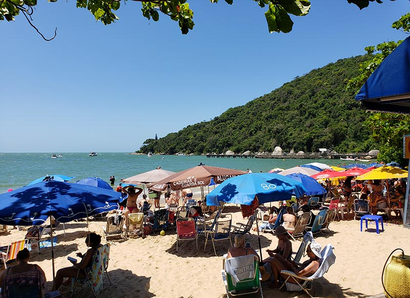
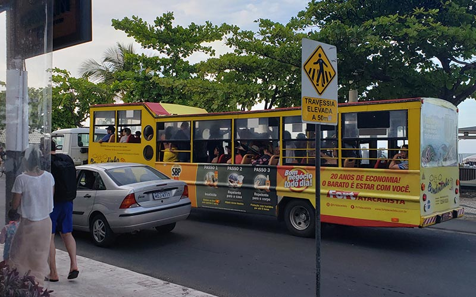
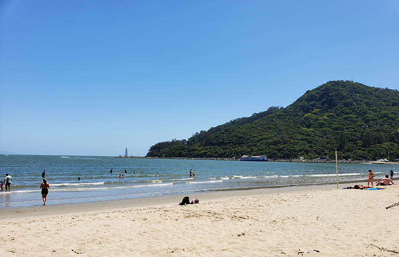
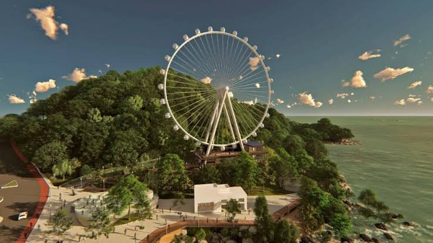

13 coisas que você tem que fazer em Balneário Camboriú!
Tem tanta coisa legal nesta lista de dicas e o que fazer em Balneário Camboriú. A praia mais badalada de Santa Catarina é o destino de vários argentinos, gaúchos, uruguaios e celebridades. Você verá arranha céus estilosos na beira da praia e que foram inspirados nos famosos de Dubai (rola muita phynesse aqui gente!).
Eu já fiz inúmeras viagens à Balneário Camboriú com a minha família no decorrer dos anos e eu vi várias mudanças em BC, como a construção dos Bondinhos Unipraias e a roda gigante!
Neste artigo sobre o que fazer em Balneário Camboriú, listo os principais pontos turísticos e os separo por região pois assim fica mais fácil para você aproveitar o máximo em cada cantinho. Também dou sugestões de acomodação em Balneário, falo quais atrações são boas para crianças e também os preços.
O que fazer em Balneário Camboriú: dicas e roteiro
O que você precisa saber antes de visitar Balneário Camboriú
Antes de mais nada, é preciso saber que Balneário Camboriú fica lotada durante o verão. MAS LOTADA MESMO, em alguns prédios há racionamento de água. É preciso sair cedo para aproveitar a praia e achar um espacinho na areia. E se for visitar atrações, compre ingressos com antecedência.
Há duas principais ruas: a Avenida Atlântica (Beira Mar) e a Av. Brasil (paralela). Elas ficam congestionadas sempre, mas ainda mais durante o verão. Um simples passeio pode te comer 2 a 3 horas do dia, então evite sair nos horários de pico e especialmente à noite. Prefira caminhar na orla da praia ou faça um caminho muito mais longo para evitar a muvuca. Também pode ser difícil achar estacionamento grátis na rua, quase não há vagas.
O reveillon em Balneário Camboriú é super agitado, há barcas de fogos que fazem um espetáculo de cores e formas no céu que duram mais de 10 minutos. Muita gente vê das sacadas dos prédios ou da praia mesmo.
Há muita gente rica morando aqui ou que passa o fim de semana, então você poderá ver diversos carros caros nas ruas como Porsche e Ferrari. Na parte da marina verá vários iates sofisticados e lanchas de luxo.
Quando visitar Balneário Camboriú?
Aconselho visitar a cidade durante a primavera (setembro a novembro) ou no início de outono (abril) quando está mais vazia e tranquila, dias mais frescos e fica mais fácil de se locomover. Os preços também estão mais baixos nas hospedagens e atrações. Para quem vai em outubro, pode aproveitar as festas locais da região para conhecer mais sobre as tradições dos imigrantes europeus como a Oktoberfest em Blumenau.
Como BC está no sul do país, o inverno pode ser bem frio com temperaturas entre 13 a 18 graus, chove pouco e tem menos vento. A noite esfria mais. Tudo é bem calmo e barato nessa época.
A alta temporada é no verão de dezembro a março. As temperaturas chegam a 30 graus e pode ter chuvas de verão no fim do dia. Dá para aproveitar muito as praias, porém saia cedo para não ficar preso no trânsito.
Como chegar em Balneário Camboriú?
O jeito mais fácil para chegar em Balneário Camboriú é pelo Aeroporto de Navegantes (NVT) a 16km da cidade, porém acredito que os voos sejam mais baratos para Florianópolis (FLN) a 90 km.
De Navegantes pode pegar um Uber que chega rapidinho. Para quem vem de Floripa, o melhor é alugar um carro pela Rentcars ou pegar um ônibus.
O que fazer em Balneário Camboriú: pontos turísticos
Confira meu guia de viagem com as melhores atrações em Balneário Camboriú para 1,2,3 ou 4 dias. Dividi as atrações por regiões da cidade, então fica muito mais fácil para você conhecê-las numa vez e não perder tempo hahah
Região da Barra Sul
Essa é a área com mais atrações da cidade, pode ficar lotado nos fins de semanas e no verão. Há vários estacionamentos pagos caso não ache vagas na rua.
1 – Bondinhos e Parque Unipraias
Essa é a principal atração e que não pode ficar fora da lista de o que fazer em Balneário Camboriú! Localizada dentro do Parque Unipraias no Complexo barra Sul juntamente com o pier da Baía de Camboriú e a Marina Tedesco.
Os bondinhos do parque Unipraias levam ao topo do morro onde fica a estação Mata Atlântica: um lugar com quiosques, trilhas para mirantes, atrações pagas a parte para crianças e adultos como a tirolesa ZipRider, trenó YooHoo e floresta encantada.
Do outro lado do morro, lá embaixo, fica a Estação Laranjeiras: uma prainha gostosa com vários bares. Se continuar pela avenida, é possível visitar praia de Taquarinhas.
O ingresso do bondinho custa em torno de 40 reais e é válido para fazer os trechos Mata Atlântica e Laranjeiras ida e retorno dentro de um dia. Lembre-se de conferir os horários de fechamento para não perder o retorno.
2 – Letreiro Eu amo BC e molhe Barra Sul
Bem em frente a estação Barra Sul dos bondinhos, fica o famoso totem de Balneário Camboriú e o quebra-mar. Foi um projeto de paisagismo bem diferente, fica bem iluminado no fim do ano e garante uma vista legal da praia e dos ínumeros prédios.
 3 – Oceanic Aquarium
Esta é uma das novas atrações em Balneário Camboriú, o maior aquário do sul do país. São em torno de 25 tanques com diversos ambientes desde o mangue, rio até oceano. O preço no site oficial custa R$58 para adultos e R$29 meia, crianças até 4 anos não pagam. Eu encontrei ingressos mais baratos para o Oceanic Aquarium no Civitatis, um outro site de revenda de ingresso que recomendo.
É nessa próxima desta atração que estão fazendo a ampliação da faixa de areia da praia com a utilização de dragas. O objetivo é que aumentar faixa de areia de 25 m para 70 m, a obra tem previsão para ficar pronta é em novembro deste ano e custou R$ 67 milhões.
4 – Barco Pirata
Essa é uma das atrações comuns em algumas praias de Santa Catarina e em BC não poderia ser diferente. É um barco animado com danças de piratas e música, sem falar que é bem divertido já que os piratas conversam com os turistas, fazem um showzinho.
O barco sai da Barra Sul, faz um contorno em frente a ilha das Cabras e para em laranjeiras (onde você pode desembarcar para almoçar).
5 – Interpraias
Esse é um trajeto para quem quer fugir do agito de BC! Trata-se de uma estrada que conecta a praia de Laranjeiras, Taquarinhas (não recomendada para banhos por ter águas agitadas), Taquaras e Estaleirinho (para quem procura sossego), do Pinho (para naturismo) até chegar em Itapema.
A Praia do Pinho possui duas áreas: uma para casais e outras para pessoas desacompanhadas. Há uma regra de conduta e tem uma parte que você pode enrar de roupa se não for adepto haha O lugar é bem bonito e cercado por morros, mata nativa e costões, além de estrutura com acomodação, restaurante e aluguel de cadeira e guarda sol.
A praia do Estaleiro é mais rústica e com areia grossa, pouca infraestrutura. Já a do Estaleirinho é bem preservada e com águas cristalinas. Durante o verão tem festa de música eletrônica na praia dos bares Sky Beach e Parador.
Região Central
Aqui ficam as lojas e shopping, além de vários hotéis e casas para alugar.
6 – Caminhar pela orla da praia Central
Essa é a parte com mais movimento da cidade, onde várias pessoas aproveitam para correr na orla ou pedalar. É muito gostoso passear durante a à noite quando é mais fresco. Se estiver cansado, pode pegar o Bondindinho, um ônibus improvisado puxado por um caminhão estilo jardineira que parte a cada 15 minutos da Barra Sul e circula pela Av. Atlântica, Pontal Norte, Av. Brasil e Via Gastronômica. A passagem custa R$5,50. Você também pode conhecer a cidade no ônibus turístico de 2 andares e que inclui até degustação de cerveja!
Do outro lado da Av. Atlântica há sempre vários restaurantes e bares. A praia central é procurada por todo mundo devido à sua localização e no fim da tarde sempre rola vôlei e futevôlei.
7 – Camelódromo
Para quem gosta de comprinhas, o camelódromo é um dos lugares para comprar roupas, bijuterias e eletrônicos. Toda essa área é bem agitada e normalmente congestionada. Aqui perto há vários hotéis, um shopping Burger King e o McDonald’s (super antigo). Se você estiver de carro, procure por um estacionamento robotizado chamado Robox Parking. Você paga barato e pode ver seu carro sendo colocado roboticamente até uma vaga dentro do prédio!
8 – Cristo Luz
Observando BC de cima, o Cristo Luz ilumina a cidade durante à noite com cores diferentes conforme o dia da semana. Pode ser visitado durante o dia ou a noite (quando o valor do ingresso é maior). Além do Cristo, você tem acesso à uma praça com vários restaurantes, cafés e bares com música ao vivo, sem falar nas lojinhas de lembrancinhas. Para evitar as filas, recomendo comprar o ingresso para o Cristo Luz antecipadamente.
Região Barra Norte
9 – Deck do Pontal Norte
Essa área é um complexo turístico que engloba um caminho de madeira acompanha a costa rochosa e a roda gigante. Atualmente está em construção por causa da roda, então o acesso está um pouco limitado.
O trapiche de madeira passa por uma área de proteção ambiental da Mata Atântica, dando acesso à praia do Buraco. Essa praia não tem estrutura pois o mar é gem agitado e é praticamente deserta.
10 – Roda Gigante Big Wheel
Está é uma das novas atrações em Balneário Camboriú e que ficou pronta em 2020, já que o coronavírus atrasou tudo. Tem 65 metros de altura e cada parte dela vem de um lugar diferente: a base vem da China, as cabines da Holanda e a parte eletrônica da Alemanha.
A volta completa dura de 15 a 22 minutos dependendo das condições climáticas. O ingresso adulto custa R$40 e crianças e idosos pagam R$20. Também é possível alugar uma cabine para 6 pessoas por R$200 com bebidas incluso. Ela fica dentro do complexo do pontal Norte com deques, área de convivência e alimentação.
11 – Morro do Careca e parapente
Localizado na barra norte de Balneário Camboriú, o Morro do Careca divide BC de Itajaí e possui um complexo de mirante, rampa e playground. É uma das vistas mais bonitas da cidade e um lugar bem tranquilo, pode subir a pé ou de carro. Daqui há voos de parapente para quem gosta de adrenalina! Os voos duram em torno de 15 minutos e devem ser agendados com antecedência.
13 – Atração extra: Beto Carrero
Essa não é uma atração de Camboriú, mas fica pertinho em Penha a 40km da cidade. É o maior parque de diversões da América Latina, tem 3 montanhas russas e várias atrações legais! Vale a pena passar um dia inteiro lá. Veja as dicas do Beto Carrero World
Se quiser dê uma passadinha na praia vizinha de Penha: Piçarras! É um amorzinho e bem tranquila. Recomendo também conhecer Bombinhas, um paraíso com águas transparentes!
Roteiro em Balneário Camboriú 1 dia, 2, 3 ou 4 dias
Você consegue aproveitar bem BC em dois dias, mas recomendo mais dias caso queira relaxar na praia.
- Dia 1: Bondinhos, praia das Laranjeiras, letreiro e molhe Barra Sul, caminhar pela orla.
- Dia 2: Deck Pontal Norte, região central e camelódromo e termina o dia no Cristo
- Dia 3: Trecho Interpraias
- Dia 4: Beto Carrero em Penha
Gostou das dicas e o que fazer em Balneário Camboriú?
Leia mais sobre Santa Catarina
10 Praias de Santa Catarina que você deve visitar neste verão